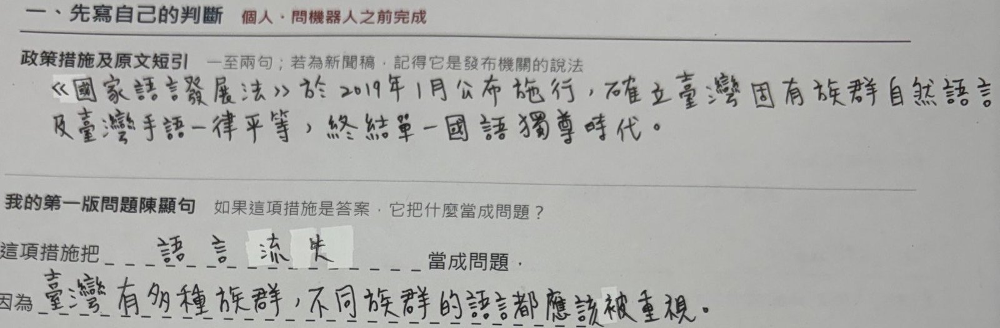
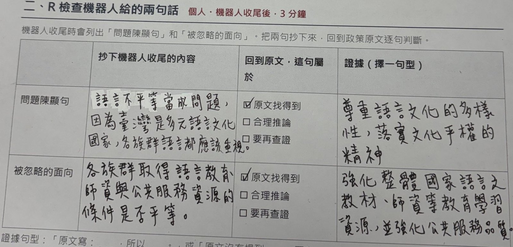
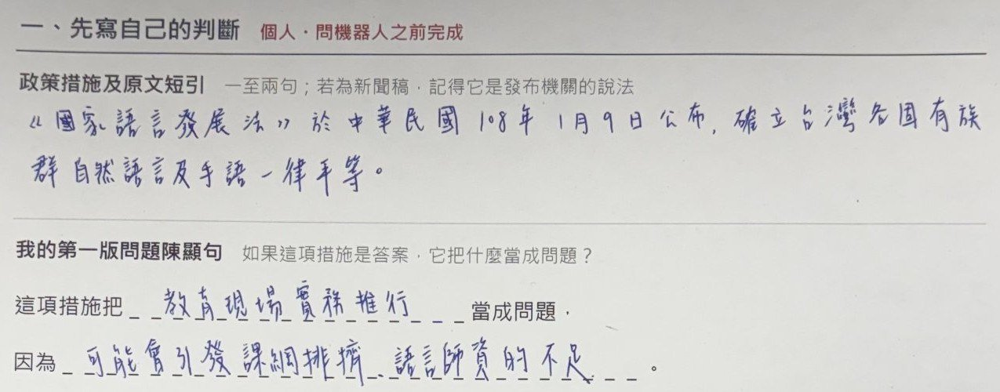
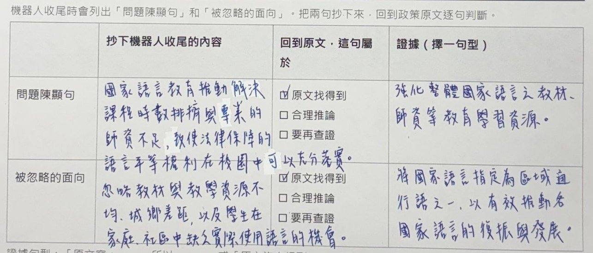
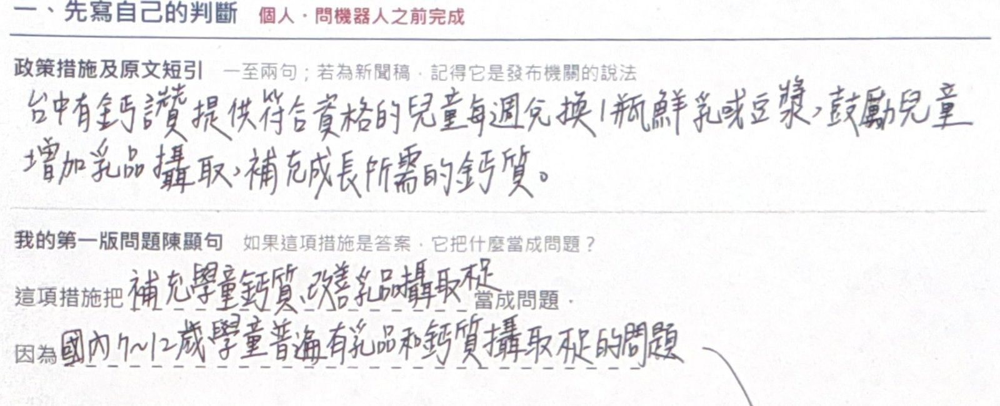
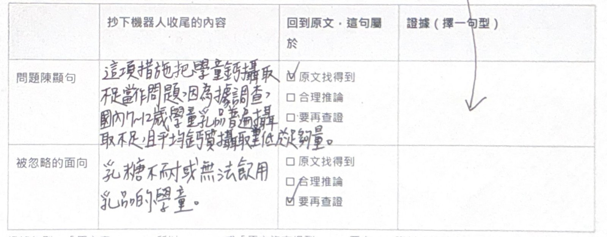

課堂實作與學習證據
兩節課的實際安排
| 課堂階段 | 學生做什麼 | 留下什麼 |
|---|---|---|
| 第一節前半 | 學習問題建構概念，分析乳品與午餐等案例 | 案例分析與初步判斷 |
| 第一節後半 | 以學習單引導，與機器人對話 | 提問與關鍵回應 |
| 第二節前半 | 遊戲複習後，分析本組政策 | 個人標記與小組判斷 |
| 第二節後半 | 接受別組挑戰，完成問題句 | 採納理由與修正內容 |
| 課後 | 查證一項說法 | 資料來源及查證結果 |
課堂的核心提問如果這項政策是答案，它把什麼當成問題？還有哪些可能的問題？
來源：講者的政策問題建構兩節課簡報。
課堂實作與學習證據
判斷的三種性質：文本明說、推論、待查證
文本明說
原文找得到。
例：「115 學年度起國中小全面免費，不分公私立。」
根據文本推論
由原文合理推得，但原文沒有直接寫。
例：市府認為學生午餐費用不應再主要由家庭承擔。
尚待查證
需要文本以外的資料才能成立。
例：「全體家庭都無力支付午餐費。」
問機器人的好提問
①原文：臺中市新聞稿寫「自 115 學年度起全面實施國中小學營養午餐全面免費政策」。②初稿：我的第一版判斷是這項措施把「家庭負擔午餐費」當成問題。③任務：請不要直接給答案，用兩個問題幫我檢查這個判斷還缺什麼證據。
來源：講者的政策問題建構兩節課簡報；案例為臺中市政府（2026 年 8 月 31 日）新聞稿。
課堂實作與學習證據
個人學習單：三個區塊，三個時間點
| 區塊 | 填寫時機 | 學生要寫什麼 | 教師能看見什麼 |
|---|---|---|---|
| 一、先寫自己的判斷 | 問機器人之前 | 政策措施與原文短引；第一版問題陳顯句 | 學生的起點 |
| 二、R 檢查機器人給的兩句話 | 機器人收尾後，3 分鐘 | 抄下「問題陳顯句」與「被忽略的面向」，勾選屬於原文找得到、合理推論或要再查證，並寫出證據 | 學生是否回到原文檢查 |
| 三、我的問題句 | 第二節最後 | 依參考句型寫出問題句 | 學生最後的判斷 |
證據句型「原文寫：＿＿，所以＿＿。」或「原文沒有提到＿＿，要有＿＿資料才能確定。」
這頁提到的學習單，可在學習單分享頁線上填寫、列印或下載 Word 檔。
學生作答｜國家語言發展法
學生 A：初判寫「語言流失」


| 欄位 | 學生的手寫內容（依原件轉錄） |
|---|---|
| 原文短引 | 《國家語言發展法》於 2019 年 1 月公布施行，確立臺灣固有族群自然語言及臺灣手語一律平等，終結單一國語獨尊時代。 |
| 第一版判斷 | 這項措施把「語言流失」當成問題，因為臺灣有多種族群，不同族群的語言都應該被重視。 |
教師判讀「因為」後面寫的是價值主張（都應被重視），還沒有說明流失的現況。可追問：哪段原文或資料顯示語言正在流失？
學生作答｜國家語言發展法
學生 A：AI 把問題轉向「語言不平等」


抄錄的問題陳顯句
語言不平等當成問題。勾選「原文找得到」，證據：尊重語言文化的多樣性，落實文化平權的精神。
抄錄的被忽略面向
各族群取得語言教育師資與公共服務資源的條件是否平等。勾選「原文找得到」，證據：強化整體國家語言之教材、師資等教育學習資源，並強化公共服務品質。
教師判讀學生用文化平權的文字支持 AI 的說法，是有效的文本對照。第二列的引文說的是「強化資源」的方向，能否說明「條件不平等」仍需資料。學生的初判是流失，AI 說法是不平等，學生是否因此修改判斷，要看第三區的問題句。
學生作答｜國家語言發展法
學生 B：初判寫「教育現場實務推行」


| 欄位 | 學生的手寫內容（依原件轉錄） |
|---|---|
| 原文短引 | 《國家語言發展法》於中華民國 108 年 1 月 9 日公布，確立台灣各固有族群自然語言及手語一律平等。 |
| 第一版判斷 | 這項措施把「教育現場實務推行」當成問題，因為「可能會引發課綱排擠、語言師資的不足」。 |
教師判讀「教育現場實務推行」較像執行面的議題，「因為」後面寫的是政策可能帶來的影響。可追問：這項法律本身想改變的是什麼情況？
學生作答｜國家語言發展法
學生 B：引文能支持「師資不足」嗎？


抄錄的問題陳顯句
國家語言教育推動解決課程時數排擠與專業的師資不足……。勾選「原文找得到」，證據：強化整體國家語言之教材、師資等教育學習資源。
抄錄的被忽略面向
忽略教材與教學資源不均、城鄉差距，以及學生在家庭、社區中缺乏實際使用語言的機會。勾選「原文找得到」，證據：將國家語言指定為區域通行語之一……。
教師判讀與回饋引文表達強化資源的方向，單憑這段文字還無法確認師資不足或時數排擠的現況。「被忽略的面向」勾選原文找得到，也值得追問兩者如何對應。回饋：「請補找師資配置或課程安排資料，說明哪些地區或課程存在不足。」
學生作答｜臺中有鈣讚
學生 C：臺中有鈣讚的初判


| 欄位 | 學生的手寫內容（依原件轉錄） |
|---|---|
| 原文短引 | 台中有鈣讚提供符合資格的兒童每週兌換 1 瓶鮮乳或豆漿，鼓勵兒童增加乳品攝取，補充成長所需的鈣質。 |
| 第一版判斷 | 這項措施把「補充學童鈣質、改善乳品攝取不足」當成問題，因為國內 7–12 歲學童普遍有乳品和鈣質攝取不足的問題。 |
教師判讀初判與政策措施對應清楚。學生從「因為」拉了一條箭頭到下方的證據欄，顯示他把這句話當成支持機器人說法的依據。
學生作答｜臺中有鈣讚
學生 C：被忽略的群體，原文其實已有線索


抄錄的問題陳顯句
這項措施把學童鈣攝取不足當作問題，因為據調查，國內 7–12 歲學童乳品普遍攝取不足，且平均鈣質攝取量低於足夠量。勾選「原文找得到」。
抄錄的被忽略面向
乳糖不耐或無法飲用乳品的學童。勾選「要再查證」，證據欄留白。
教師判讀與回饋學生自己抄的原文寫著「鮮乳或豆漿」，政策可能已部分回應無法飲乳的學童。可以請學生回到這句原文，判斷這個面向是否真的被忽略，再查兌換規定確認。這是教師建議的方向，學生尚未完成查證。
課堂實作與學習證據
分析品質落在哪些具體文字上
| 判斷面向 | 本課的作答 | 教師可以給的回饋 |
|---|---|---|
| 問題是否清楚？ | 學生 B「教育現場實務推行」 | 具體是哪種現象？誰在什麼情境下受到影響？ |
| 依據是否支持說法？ | 學生 B 以「強化資源」支持「師資不足」 | 補找現況資料，區分政策方向與已知問題 |
| 初判與 AI 說法的差異 | 學生 A「語言流失」與「語言不平等」 | 你採納哪一個？理由是什麼？ |
| 有沒有其他群體？ | 學生 C「乳糖不耐或無法飲用乳品的學童」 | 對照原文「鮮乳或豆漿」與兌換規定 |
使用限制這些回饋依本課任務提出，尚未作為經驗證的評量量表；三份選例不能推估全班的表現。三份作答的第三區問題句皆留白，尚無修正後的資料。
課堂實作與學習證據
一則追問讓我們看到學生的判斷
| 對話角色 | 原文（學生 D，免費營養午餐的分析對話，節錄） |
|---|---|
| AI 先前回應 | 「財政可負擔性／永續性」：免費午餐是否可長可久？ |
| 學生追問（完整） | 你提出來的是 可能的問題吧？ |
| AI 後續回應 | 如果你指的是「財政壓力/追加預算、公私立公平、執行負擔」那比較偏「可能的問題」 |
教師判讀
學生在檢查 AI 是否把「其他可能的問題」當成政策原本要處理的問題，可討論 E.RV 檢視。追問後 AI 重新區分兩類問題。
還不能判斷的
學生的分類是否正確，仍要看他能否指出政策原文說明理由。
課堂實作與學習證據
下一次蒐集，學生要交什麼
| 每位學生保留的資料 | 要求學生寫出的內容 |
|---|---|
| AI 前的初判 | 我認為政策處理的問題是什麼？哪段原文支持這個判斷？ |
| 一段關鍵對話 | AI 的哪句話影響了我的判斷？我採納、保留或質疑它的理由是什麼？ |
| 最後問題句與查證 | 我修改了什麼？查到哪項資料？支持程度如何？ |
資料連結以同一學生編號串起對話與學習單；個人作答與小組共同成果分開判讀。
延伸：認知網絡分析（ENA）
對話行為編碼表

延伸：認知網絡分析（ENA）
ENA Webtool

延伸：認知網絡分析（ENA）
ENA 網絡圖

延伸：認知網絡分析（ENA）
研究實例：以 ENA 分析學生繪圖

延伸：認知網絡分析（ENA）
研究實例的資料與編碼
每位學生約花50分鐘完成兩部分資料。
第一部分為科學學習觀問卷，採五點量表，測量兩種學習目的。「理解」包含4題，例如理解科學知識及概念間的關聯；「考試」包含5題，例如在考試中取得高分。兩個分量表的 Cronbach’s α 分別為 .86與 .87。
第二部分要求學生各畫一張圖，表達「過去實際經歷的科技輔助科學學習」與「心目中理想的科技輔助科學學習」。學生可以使用圖像、文字、符號、樹狀圖或網絡圖，因此分析對象包含多種表徵。
繪圖編碼
研究將190張圖編碼為七類、共20項元素，涵蓋科技類型、學習地點、教學活動、學習內容、參與者、科技提供的學習可能性，以及科技對教學的影響。
每項元素出現記為1，未出現記為0。例如，一張圖若呈現學生在教室使用電腦搜尋資料，就會包含「硬體或軟體」「教室內」「學生」「資訊搜尋」等編碼。
延伸：認知網絡分析（ENA）
繪圖編碼表

延伸：認知網絡分析（ENA）
ENA 結果：實際經驗與理想的比較


延伸：認知網絡分析（ENA）
研究實例：原住民族教師專業發展與共創行為


課堂實作與學習證據
您的課程需要哪項思考證據？
1學生需要判斷什麼？
例如選擇研究方法、解釋文本、比較方案。
2現有作業留下了哪些理由？
您現在收到的作業，能看出學生選擇的理由嗎？
3增加哪一個欄位或哪一段對話？
若多留一段對話或一個修正欄位，最希望看見什麼？
討論方式思考 1 分鐘，再邀請二至三位教授分享任務、現有資料與希望補充的證據。可從一份學習單、一段對話或一次修正開始。
參考文獻
- Bacchi, C. (2009). Analysing policy: What's the problem represented to be? Pearson.
- Chang, C. C., & Hwang, G. J. (2025). ChatGPT-facilitated professional development: Evidence from professional trainers' learning achievements, self-worth, and self-confidence. Interactive Learning Environments, 33(1), 883–900.
- Lai, J. W. (2024). Adapting self-regulated learning in an age of generative artificial intelligence chatbots. Future Internet, 16(6), 218. https://doi.org/10.3390/fi16060218
- Raiffa, H. (1968). Decision analysis: Introductory lectures on choices under uncertainty. Addison-Wesley.
- 陳宏彰（2024 年 3 月 14 日）。政策問題化：概念與方法〔簡報〕。學者點專業學術社群分享。
- 臺中市政府（2026 年 8 月 31 日）。中市免費營養午餐啟航！盧市長親為學生打菜並陪同用餐〔新聞稿〕。
- 劉育隆（2026）。AITE：AI 助教〔簡報〕。國立臺中教育大學智慧教育中心。
- 阮孝齊（2026）。AI 輔助備課與課堂應用：教育政策分析的實作案例〔簡報〕。國立臺中教育大學教育學系。